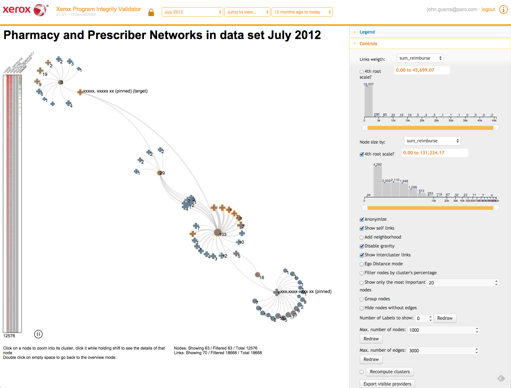

Network Explorer: Design, Implementation, and Real World Deployment of a Large Network Visualization Tool
Large networks visualization
Plenty of work has been done on the field
Our objectives
- Apply state of the art of netViz
- Report what worked (and didn't) in our industry setting
- We open sourced some of our components for the community to reuse
Some netviz tools
- NetworkX
- Gephi
- Cytoscape
- Pajek
- NetworkX
- Many others
Why develop another tool?
- Integration
- Web-based
- Scalability
- Industry
Best practices
Customer's needs
- Get an overview of the network
- Explore nodes of interest's ego-networks on demand
Best practice #1: offer overviews and ego-network modes
Overview mode
Too much information
http://blog.opencog.org/files/2008/10/ssdemo-fwd-15000-before.png{kind=link}
Rank-by-relevance framework
Best practice #2 filter and display the most important nodes
Rank-by-relevance framework 2
Best practice #3 include neighborhoods in the selection

NetClustering.js
https://github.com/john-guerra/netClusteringJsForce-in-a-box
Best practice #4 Cluster and separate groups
https://github.com/john-guerra/forceInABox
Jump into clusters

Jump into clusters

Jump into clusters

Jump into clusters

Best practice #5 Allow users to filter by cluster
Node navigator

Best practice #6 Inform users of what they are seeing
Overview
Ego-network view
Ego-distance mode

Best practice #7 Allow node expansion on demand
Node pining
Best practice #8 Allow custom layouts
Validation
Fraud, waste and abuse

Police chat networks

Drug latent communities
Contributions
- Best practices
- Node Navigator
- Open Sourced force-in-a-box layout
- Open Sourced in-browser clustering
- Rank-by-relevance framework